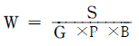
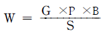
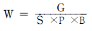
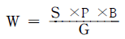
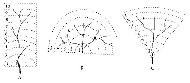
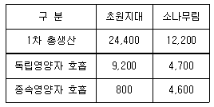

자연생태복원산업기사 (2004-12-12 기출문제)
1과목: 환경생태학개론
1. 보전지역 설정을 위한 유네스코 MAB모델과 거리가 먼 것은?
- 보전가치에 따라 핵심지역, 완충지역, 전이지역으로 구분한다.
- 핵심(core)지역은 희귀종, 고유종, 멸종위기종이 많거나 생물 다양성이 높은 곳이다.
- 완충(buffer)지역에는 생태관광, 주거지 등이 가능하다.
- 전이(transition)지역은 일정수준의 개발이 허용된 지역이다.
(정답률: 알수없음)

2. 온대지방에서 가장 추운 겨울철에 생존하는 방법, 즉 새로 생장이 시작될 휴면아(bud)의 위치에 따라 생활형을 구분한 학자는?
- Braun-Blanquet
- Daubenmire
- Raunkiaer
- Jaeger
(정답률: 60%)
3. 유수 생태계를 설명한 것 중 가장 거리가 먼 것은?
- 여울지역은 물의 흐름이 빠르고 부착성 생물이 자리 잡고 있다.
- 못(pool zone)은 수심이 깊고 유속이 느려지는 지역으로 부드러운 바닥층에 굴을 파거나 헤엄치는 동물, 유근식물이 서식할 수 있는 환경을 제공한다.
- 강 상류에서는 침식작용이 일어난다.
- 강 하류에서는 퇴적작용이 일어나며, 낮은 수온과 용존 산소에서도 잘 자라는 송어, 열목어 등이 서식할 수 있는 환경을 제공한다.
(정답률: 알수없음)
4. '생물을 유지하는 여러 가지 요인 중 소수의 요인이 부족하여 효율적이고 생산적인 성장을 방해하는 것'을 말하는 것은?
- 생산성
- 제한요인
- 상승요인
- 에너지법칙
(정답률: 알수없음)
5. 생태계 훼손에 따른 대체 방안으로서 야생동물 이동통로에 대한 계획이 이루어지고 있다. 다음 중 고려사항으로 가장 거리가 먼 것은?
- 야생동물 이동통로의 설치에 있어서 가장 핵심이 되는 요소는 위치 선정이다.
- 이동통로는 서식처간을 연결하는 최단거리이며, 폭은 좁을수록 유리한 것으로 알려져 있다.
- 특정한 종을 보호하는 것인지 일반종을 포함하는 것인지에 대한 결정이 이루어져야 한다.
- 서식처 사이의 거리선정은 인공위성을 이용한 이동패턴 조사, 도로에 남겨진 사체의 빈도조사 등을 이용한다.
(정답률: 80%)
6. 다음 중 분해자를 잘못 설명한 것은?
- 분해자에는 세균과 곰팡이가 포함된다.
- 생산자와 소비자의 사체와 배설물을 분해한다.
- 인공적으로 합성한 물질은 모두 분해자가 분해한다.
- 물질 순환에 매우 중요한 역할을 한다.
(정답률: 알수없음)
7. '인간의 영향을 받아 형성된 식생'을 말하는 것으로 가장 적당한 것은?
- 대상식생
- 자연식생
- 2차 식생
- 중도식생
(정답률: 알수없음)
8. 수질오염에 대한 설명으로 가장 거리가 먼 것은?
- 수질오염은 침전물질, 공업폐수, 유기물질, 열 등에 의한 오염의 형태로 나눌 수 있다.
- 카드뮴 중독증으로 일본에서 발생한 미나마타병이 있다.
- 미국 Tule호 및 Lower Klamath 보호구에서 발생한 생물 군집의 DDT농축은 먹이연쇄 단계가 높아질수록 생물학적 농축이 높아짐을 잘 보여주는 사례이다.
- 수중에 존재하는 유기물질을 산화시키는데 필요한 산소 요구량을 생물학적 산소요구량(BOD)이라고 한다.
(정답률: 알수없음)
9. 다음 중 생태적 피라미드의 형태에 속하지 않는 것은?
- 개체 수 피라미드
- 생존형 피라미드
- 생물량 피라미드
- 에너지 피라미드
(정답률: 알수없음)
10. 적도 인근의 고온다습한 기후에 발달한 식생대로 가장 적당한 것은?
- 툰드라
- 열대우림
- 온대낙엽수림
- 북방침엽수림
(정답률: 알수없음)
11. 생태계에서는 공간, 먹이, 증식 등에 대하여 서식 생물들간에 종간경쟁과 종내경쟁이 일어난다. 그 결과 특정 개체군의 증가는 어떤 형태의 생장곡선을 보이는가?
- J형곡선, S형곡선
- S형곡선, I형곡선
- J형곡선, L형곡선
- S형곡선, L형곡선
(정답률: 알수없음)
12. 생태계 보전의 관점에서 도로 등의 건설에 있어서 생태계를 보호하는 수법으로 가장 거리가 먼 것은?
- 서식환경으로부터 노선을 우회하도록 한다.
- 관목식재를 통하여 조류의 비행고도를 확보한다.
- 도로에 의하여 이동루트가 분단된 양서류 등은 이동이 가능하도록 대안을 확보해 준다.
- 대형동물의 보호수법으로서 도로의 상부나 하부에 이동 루트를 확보한다.
(정답률: 알수없음)
13. 담수의 부영양화에 주된 원인물질로 바르게 짝지어진 것은?
- 인(P), 질소(N)
- 인(P), 철(Fe)
- 질소(N), 철(Fe)
- 칼슘(Ca), 마그네슘(Mg)
(정답률: 알수없음)
14. 생물다양성 유지를 위한 보호지구 설정을 위해 흔히 이용하는 도서생물 지리 모형(island biogeographical model)의 내용과 가장 거리가 먼 것은?
- 보호지구는 여러 개로 분산시킨다.
- 보호지구는 넓게 조성한다.
- 보호지구는 서로 연결시킨다.
- 보호지구의 형태는 원형에 가까운 것이 유리하다.
(정답률: 70%)
15. 선형의 생태공간으로서 면적공간을 물리적, 생태적으로 연결하며 통로로서의 기능을 포함하는 것은?
- 섬(island)
- 에지(edge)
- 패치(patch)
- 코리도(corridor)
(정답률: 알수없음)
16. 생물 개체군은 어떤 특정 공간을 점유하는 동일한 종이 구성하는 집합체로서 통계적으로 표현되는 몇 가지 특성을 나타낸다. 이에 해당되지 않는 사항은?
- 밀도 및 분산
- 대기조성
- 출생률과 사망률
- 연령분포
(정답률: 알수없음)
17. 어느 군락에에서 100개체의 생물이 있다고 가정한 경우 다음 중 종다양도가 가장 높은 군락은?
- 1개종이 91개체이고 9개 종이 1개체씩 구성되어 있다
- 3개종이 20개체이고 4개종이 10개체씩 구성되어 있다.
- 7개종이 10개체이고 2개종이 15개체씩 구성되어 있다.
- 10개종이 10개체씩 구성되어 있다.
(정답률: 알수없음)
18. 일정 지역의 생태계에서 생태 군집을 유지하는데 결정적인 역할을 하는 종은?
- 깃대종(flagship species)
- 기회종(opportunistic species)
- 핵심종(keystone species)
- 개척종(pioneer species)
(정답률: 알수없음)
19. 다음 간석지(갯벌)생태계 설명 중 가장 거리가 먼 것은?
- 보수력이 높다.
- 생물 생산량이 낮다.
- 간석지 주변에는 하구습지가 조성된다.
- 생물다양성이 높다.
(정답률: 알수없음)
20. 삼림제거가 유발하는 장기적 환경변화가 아닌 것은?
- 영양염류의 유실로 인한 비옥도 감소
- 서식지의 변화에 따른 종 다양성 감소
- 토양침식의 증가
- 탄소동화작용의 감소로 인한 지구온난화
(정답률: 알수없음)
2과목: 환경학개론
21. 도시 보전용도지역 지정을 위한 일반적인 환경·생태적 지정기준으로 타당하지 않는 것은?
- 경사도 5% 이상
- 녹지자연도 7등급 이상
- 생태자연도 1등급
- 산림지역 7부 능선 이상
(정답률: 알수없음)
22. 다음 중 생태적 도시계획에 적용할 만한 기술로 적당하지 못한 것은?
- 에너지 절약형 건축
- 녹생토공법
- 투수성포장
- 옥상녹화
(정답률: 알수없음)
23. 다음 중 벽면 녹화식물로 적당하지 않은 것은?
- Wisteria floribunda
- Campsis grandiflora
- Parthenocissus tricuspidata
- Stephanandra incisa
(정답률: 알수없음)
24. 생태도시란 도시를 하나의 유기적 복합체로 보아 다양한 도시활동과 공간구조가 생태계의 기본적인 속성을 포함하는 인간과 자연이 공존할 수 있는 환경친화적인 도시라고 할 수 있는데 다음 중 이러한 일반적인 생태도시의 속성에 해당하지 않는 것은?
- 다양성
- 심미성
- 자립성
- 안정성
(정답률: 알수없음)
25. 우리나라에서 택지개발을 위한 공간계획의 순서가 바르게 나열된 것은? (단, 상위계획부터 나열)
- 광역도시계획 → 도시계획 → 도시기본계획 → 지구단위계획
- 광역도시계획 → 도시기본계획 → 도시계획 → 지구단위계획
- 광역도시계획 → 지구단위계획 → 도시기본계획 → 도시계획
- 광역도시계획 → 지구단위계획 → 도시계획 → 도시기본계획
(정답률: 알수없음)
26. 다음 중 생태계 보전을 위한 적극적 유인제도로 가장 적당한 것은?
- 개발권거래제도
- 벌금부과제도
- 공공토지매입제도
- 환경마크제도
(정답률: 알수없음)
27. 다음 토지적성평가 자료 중 현재 사용되지 않는 것은?
- 토지이용 능력 구분조사서
- 녹지자연도
- 생태·자연도
- 국토환경성평가
(정답률: 알수없음)
28. 육상에서 단위면적(m2)당 생물권의 1차 총 생산량이 가장 높은 곳은?
- 습윤 온대림
- 북방 침엽수림
- 기계화된 경작지
- 열대 강우림
(정답률: 알수없음)
29. 지속가능한 개발에서 말하는 환경용량의 정의로 가장 적당한 것은?
- 법률에서 정하는 용적율에 근거한 개발
- 환경이 지탱할 수 있는 범위 내에서의 개발
- 환경보전만을 위주로 한 개발
- 인간의 편의만을 위주로 한 개발
(정답률: 알수없음)
30. 생태자연도는 현재 몇 개의 단계(등급)로 구분되어 있는가?
- 3개
- 4개
- 5개
- 7개
(정답률: 알수없음)
31. 다음 중 지속가능한 발전과 거리가 먼 것은?
- 물리적 수용능력의 범위에서 수용인구를 산정한다.
- 현세대는 물론 미래세대와 현세대간의 형평성을 추구한다.
- 환경정의에 있어 환경의무 이행을 차등화 한다.
- 피해받지 않는 개발(invulnerable development)을 선택한다.
(정답률: 알수없음)
32. 대규모 녹지를 연결하는 생태축에 대한 장점으로 볼 수 없는 것은?
- 그린벨트 제공
- 질병, 해충 등의 확산 감소
- 생물서식처 제공
- 넓은 영역성을 가진 종(소형 포유류 등)의 먹이획득 지역의 증대
(정답률: 알수없음)
33. 다음 중 효율적인 생태네트워크를 위한 시행방안으로 적절치 않은 것은?
- 야생동물 이동통로 설치
- 비오톱 조사 및 지도화
- 옥상 및 벽면 녹화
- 임도의 설치 및 확대
(정답률: 알수없음)
34. 도시하천의 특성은 하천 복원시 고유한 방법을 필요로한다. 도시 하천 복원시 우선적으로 고려해야 할 요소가 아닌 것은?
- 퇴적과 오염물질의 축적에 따른 생물 서식환경에 대한 부정적 영향
- 복단면 조성, 직강화 등의 하도 변경
- 불투수 포장면적의 점유비율 확대에 따른 물순환 체계의 변화
- 위락활동에 대한 부정적 영향
(정답률: 알수없음)
35. 연못의 호안 경사를 2%로 설정하려면 수평거리 1m 당 길이에 대한 수심의 깊이는 얼마인가?
- 0.1cm
- 1cm
- 2cm
- 4cm
(정답률: 70%)
36. 주거환경 요소별 기준 및 계획방향으로 옳지 않은 것은?
- 향과 일조 : 앞 건물의 그림자에 가리지 않고 일사를 받아야 하는 일조시간 범위는 동지때 8시간으로 제시한다.
- 미기후(바람) : 건물은 여름풍향과 평행되고 겨울풍향과 수직이 되도록 하는 것이 좋다.
- 밀도 : 일반적으로 저밀도 100인/ha, 중밀도 100~300인/ha, 고밀도 300인/ha 이상이다.
- 배치 : 일조와 프라이버시를 확보하기 위한 장소성, 영역성과 관계가 깊다.
(정답률: 알수없음)
37. 2003년 7월 개정 시행된 환경정책기본법 상 국가차원의 환경보전을 목적으로 하는 가장 상위계획은?
- 환경보전장기종합계획
- 전국자연환경보전계획
- 국가환경종합계획
- 국토통합생태네트워크계획
(정답률: 알수없음)
38. 택지개발계획수립시 활용하는 핵심보전지 설정기준으로 가장 바른 것은?
- 도시녹지축 주변 40m 이내
- 사찰반경 3km 이내
- 보호수 반경 200m 이내
- 경사도 25% 이상
(정답률: 55%)
39. 산악지역을 가로지르는 왕복 4차선 도로의 환경친화적 도로 개설시 우선적으로 고려되어야 할 사항이 아닌 것은?
- 경관생태학적 분석을 통한 야생동식물의 이동경로 분석
- 환경성 평가를 통한 영향최소화 노선의 선정
- 훼손지역에 대한 복원대책을 광범위한 지역을 대상으로 적극적으로 적용
- 도로가 건설되는 지역의 자연환경의 명확한 파악
(정답률: 80%)
40. 지속가능한 발전 개념의 바탕에서 생태계 보전 목적으로 옳지 못한 것은?
- 자연환경 보전을 위한 책무와 국제적인 책임을 충족한다.
- 새롭게 변화되고 있는 환경에 맞게 야생생물 개체군을 유지한다.
- 희귀 및 멸종위기 생물종의 개체군이 존속할 수 있도록 유지한다.
- 야생생물의 군집과 자연적 지형의 특징을 유지한다.
(정답률: 알수없음)
3과목: 생태복원공학
41. 비탈면 식생공사를 실시할 때 시공 직후의 토양표면 및 뿜어붙이기 재료의 침식을 방지할 목적으로 사용하는 약제를 무엇이라고 하는가?
- 침식 방지분산제
- 토양 양생제
- 구성제
- 피복재
(정답률: 알수없음)
42. 생태 숲 조성을 위한 조사과정에서 우선적으로 고려되어야 할 사항은?
- 주변지역의 식생구조
- 식생군락 모델 선정
- 종 다양성 분석
- 주요 생물서식지
(정답률: 알수없음)
43. 다음 녹화용 식물의 종자 파종시 종자 파종량을 구하는 공식이다. 파종량 산출식으로 옳은 것은? (단,W=파종량(g/m2), G:발생기대본수, S:평균입수, P:순량율, B:발아율)




(정답률: 알수없음)
44. 다음 중 과거 훼손지의 복원을 위한 자생식물의 이용성이 증가하지 못했던 이유로 가장 적당한 것은?
- 훼손지 복원을 위한 자생식물을 선정, 이용하기 위한 체계화된 자료가 부족하다.
- 국내 자생식물의 생리, 생태적 특성에 대한 연구는 거의 없다.
- 우리나라는 자생식물의 종류가 매우 적은 실정이다.
- 훼손지의 복원을 위해서는 자생식물이 불 필요하다.
(정답률: 알수없음)
45. 다음 중 재래 목본·초본종으로만 짝지어진 것 중 가장 적당한 것은?
- 참싸리, 사방오리나무, 지팽이풀
- 억새, 다년생호밀풀, 병꽃나무
- 잡싸리, 참싸리, 호장근
- 오리새, 개솔새, 비수리
(정답률: 알수없음)
46. 배수구를 통과하는 유량이 10m3/sec이고 배수로를 흐르는 물의 평균유속이 4m/sec일 때 배수구조물의 단면적(m2)은 얼마인가?
- 40
- 5
- 2.5
- 0.4
(정답률: 알수없음)
47. 생물학적 표본추출법에 의한 생태측정방법이 아닌 것은?
- 우점도
- 종다양도
- 균등도
- 녹지자연도
(정답률: 알수없음)
48. 훼손지 비탈면의 경우 양분을 포함하지 않은 하층토인 경우가 많아 녹화시 일정량의 비료를 시비해야 할 필요가 있다. 다음 중 각 비료성분과 그 효과가 바르게 연결된 것은?
- 질소(N) : 질소가 부족하면 뿌리의 발육이 나빠지며, 생장이 저하된다.
- 인(P) : 식물섬유의 주성분으로 줄기와 잎의 생육에 큰 효과가 있다.
- 칼륨(K) : 탄수화물의 합성과 동화생산물의 이동에 관여하여 동화작용을 촉진하고 일조의 부족을 보충하는 생리작용도 한다.
- 칼슘(Ca) : 칼슘이 부족하면 지엽의 생육이 빈약해지고 잎의 색깔이 담황색을 나타낸다.
(정답률: 알수없음)
49. 복원공사 시 수목의 지상부는 자르고 근원부를 캐서 이식하는 것을 무엇이라 하는가?
- 소스이식
- 매토이식
- 근주이식
- 복사이식
(정답률: 알수없음)
50. 생활양식과 서식장소가 다른 어·패류 등의 수역생물과 곤충 및 작은 동물 등의 육역생물이 교차하는 생식지역으로 일종의 천이역이기도 한 곳은?
- 수역
- 수제역
- 육역
- 수리역
(정답률: 알수없음)
51. 다음 무기토양 중 양이온 치환용량이 가장 큰 것은?
- 펄라이트
- 버미큘라이트
- 카올리나이트
- 모래
(정답률: 알수없음)
52. 다음의 그림에 대한 설명으로 틀린 것은? (단, 유역면적은 동일하며, 강우량이 같고, 강우가 유역 전역에 최소한 10시간 계속된다고 가정함.)

- B 유역의 형상이 첨두유량에 도달하는 시간이 가장 빠르다.
- B 유역의 형상이 강우가 끝나면 가장 빨리 감수하게 된다.
- 가장 오랫 동안 유출이 되는 유역의 형상은 A 이다.
- 유출량의 변화가 가장 적은 것은 C 유역의 형태이다.
(정답률: 알수없음)
53. 옥상을 생물서식공간으로 조성하고자 할 때 고려할 사항이 아닌 것은?
- 건물의 안정성 확보
- 배수와 방수에 대한 안전성 확보
- 제방의 안전성 확보
- 바람의 저항에 대한 저감 방안
(정답률: 알수없음)
54. 다음 중 1급수 지표생물로 보기 어려운 것은?
- 버들치
- 도룡뇽
- 가재
- 붕어
(정답률: 알수없음)
55. 적정량의 유기물은 식물생장에 필요한 요소이다. 산림 토양에서 낙엽이 분해되면서 나타나는 현상을 설명한 것으로 적당한 것은?
- 낙엽이 분해되면 토양은 점차 알칼리성으로 변한다.
- 낙엽이 분해될 때 끝까지 분해되지 않은 페놀화합물과 탄닌류는 다른 식물이나 미생물의 생장을 억제하는 타감작용(allelopathy)을 하기도 한다.
- 산림토양의 C/N율은 경작토양에 비해 높은 수준이다.
- 표토 15㎝내 유기물 함량은 산림토양이 경작토양에 비해 적다.
(정답률: 알수없음)
56. 도로비탈면의 토양에 대한 설계표준치로 부적합한 내용은 어느 것인가?
- 토양경도 : 지표경도 23mm 이하
- 투수계수 : 10-4cm/sec 이상
- 유효수분 : 80L/m3 이상
- H2O의 pH : 7.5 ∼ 8.5
(정답률: 80%)
57. 생태적 코리더(corridor)는 연결되는 형태에 따라 선코리더(linear corridor), 디딤돌 코리더(stepping stone corridor), 그리고 경관 코리더(landscape corridor) 등으로 구분할 수 있다. 다음 중 선 코리더가에 속하지 않는 것은?
- 하천
- 가로수
- 옥상녹지
- 철로변 녹지
(정답률: 알수없음)
58. 다음 산 비탈 사방녹화공사와 관련된 설명 중 틀린 것은?
- 토양침식은 우수의 침식성과 토양의 수식성의 관계가 크다.
- 산 비탈의 침식을 방지하기 위해서는 비탈면의 경사를 완화시켜야 한다.
- 산 비탈이 일단 붕괴 멈추었더라도 추가 붕괴 위험이 발생할 수 있다.
- 산 비탈 사방녹화 공사를 위한 임황 조사내용에는 지형, 지질, 토질, 토양 등이 있다.
(정답률: 알수없음)
59. 도시 생태 네트워크에서 점적요소가 되는 옥상녹화를 활용해 서식처를 조성하고자 할 때, 목표종(target species)으로 선정하기에 적절하지 않은 종은?
- 암먹부전나비
- 도요새
- 밀잠자리
- 참새
(정답률: 알수없음)
60. 다음 중 하안 및 제방을 자연적으로 복원하기에 가장 적당한 방법은?
- 돌망태 등을 적극 도입한다.
- 버드나무 말뚝 및 가지, 펜스를 이용하여 식생을 발달시키고 5, 10, 15년 주기로 교체해 준다.
- 매트릭스를 설치하고, 여울과 소를 조성한다.
- 식생콘크리트 블록을 사용하여 식생을 성립시킨다.
(정답률: 55%)
4과목: 생태조사방법론
61. Raunkiaer의 생활형 체계는 겨울눈의 위치에 따라 구분하는데, 생활형의 설명 중 잘못된 것은?
- 일년생식물은 종자로 겨울이나 건기를 넘기는 상치같은 1년생 식물을 말한다.
- 지중식물은 겨울눈이 땅속에 묻혀 보온되는 튜립이나 얼레지 같은 식물이다.
- 지표식물은 월동조직이 지표면에 위치한 미역취 같은 다년생의 초본식물이다.
- 지상식물은 동아 등의 월동조직이 지표면에서 25cm이상되는 곳에 위치한 목본식물이다.
(정답률: 64%)
62. 토양의 미생물 수를 측정하는 방법 중 생균수 측정법으로 가장 적당한 것은?
- 희석평판법
- 슬라이드 매몰법
- 형광항체법
- 토양절편법
(정답률: 알수없음)
63. 채집된 식물플랑크톤의 표본을 현미경으로 관찰위해 임시로(수일∼수개월) 보관하기에 가장 적절한 용액은?
- 100% Formalin 용액
- 70% FAA 용액
- 70% ethanol
- 0.3% Lugol 용액
(정답률: 알수없음)
64. 생태조사를 수행하는데 있어서 제일 먼저 선행되어야 할 단계로 옳은 것은?
- 연구대상의 범위 확정
- 실험 또는 조사 계획 수립
- 생태적 문제의 파악
- 표본 추출방법의 선정
(정답률: 알수없음)
65. 물질생산력(productivity)에 대한 설명 중 옳지 않은 것은?
- 어떤 일정 시간에 야생 군집내 존재하는 동물의 생산량을 생산력이라 말한다.
- 생산자의 광합성 및 화학합성에 의하여 방사에너지가 먹이로 이용되 무기물의 형태로 고정되는 속도를 1차 생산력이라 한다.
- 생태계의 구성요소인 소비자 수준에서의 에너지 축적 속도를 2차 생산력이라 칭한다.
- 생물학상의 생산력은 화학이나 산업에서 쓰이는 '생산고(yield)'와는 다른 의미로 사용한다.
(정답률: 알수없음)
66. 다음 중 출현 종의 수도를 고려하여 군집 유사도를 나타낼 수 있는 것은?
- Sφ rensen 계수
- Jaccard 계수
- 백분율 유사도
- Shannon-wiener 지수
(정답률: 50%)
67. 생태조사는 조사의 목적과 대상에 따라 조사하는 빈도를 달리할 수 있다. 생물군집 및 생물상 조사는 1년에 계절별로 조사하는 것을 일반적인 원칙으로 삼고 있다. 생물의 종류에 따른 조사 시기의 선정과 관련된 설명 중 옳지 않은 것은?
- 식물상 조사는 식물의 개화시기를 고려하여 봄, 여름, 가을 (년 3회) 조사를 기본으로 하면 된다.
- 조류 조사는 봄, 여름, 가을, 겨울 (년 4회) 조사를 기본으로 하며, 조류의 번식시기 또는 철새의 이동시기를 고려하여 추가로 조사를 실시한다.
- 양서류와 파충류의 조사는 봄, 여름, 가을, 겨울(년 4회) 조사를 실시한다. 특히 겨울철에는 이들이 모여서 겨울잠을 자기 때문에 서식지를 조사하기에 가장 적절한 시기이다.
- 곤충은 곤충의 활동시기인 봄, 여름, 가을, 겨울 (년 4회) 조사를 원칙으로 한다. 그러나 겨울철에는 알이나 애벌레로 월동하기 때문에 종의 동정을 생략하기도 한다.
(정답률: 알수없음)
68. 동물의 표본 추출에서 단위면적의 밀도지수(index of density)를 측정하기 위한 간접조사 방법이 아닌 것은?
- 한번 쓸은 포충망 당 메뚜기의 개체 수
- 시간 당 잡은 묵납자루 개체 수
- 단위면적 1km2에서 잡은 다람쥐의 개체 수
- 걸어온 거리(㎞) 당 발견되는 까치 개체 수
(정답률: 알수없음)
69. 일반적인 국지(local)생태계 조사에서 중요한 대기환경 조사항목으로 가장 거리가 먼 것은?
- CFCs
- 강우 산성도
- SOx
- 습도
(정답률: 알수없음)
70. 산림생태계의 먹이연쇄의 예로 적당치 않은 것은?
- 낙엽 → 토양곤충 → 무척추 기생동물 → 두더지
- 침엽수 → 나비 → 새 → 족제비
- 활엽수 → 겨울나방 → 족제비 → 들쥐
- 초본 → 초식곤충 → 거미 → 참새
(정답률: 알수없음)
71. 식물의 식생 조사시 흔히 이용하는 Braun-Blanquet의 피도계급은 7계급으로 구분된다. 다음 중 이 계급을 판정하는 기준으로 설정이 잘못된 것은?
- 계급1 : 개체수가 많지만 피도가 조사면적의 5% 이하를 차지하는 종
- 계급2 : 피도가 조사면적의 6 - 25%를 차지하는 종
- 계급3 : 피도가 조사면적의 26 - 50%를 차지하는 종
- 계급4 : 피도가 조사면적의 51 - 100%를 차지하는 종
(정답률: 알수없음)
72. 다음 표는 중부지방의 초원지대의 생태계에 있어서의 Kcal/m2/1년으로 나타낸 연간 생산량과 호흡량이다. 이 초원지대의 군집순생산량의 값은?

- 15,200
- 14,400
- 8,400
- 7,300
(정답률: 알수없음)
73. 야생동물이 살아가기 위해서는 서식지 구성요소가 매우 중요하다. 서식지의 구성요소에 속하지 않는 것은?
- 관목층
- 먹이
- 둥지
- 물
(정답률: 알수없음)
74. 산의 경사가 급한 산림지역에서 선조사법(line transect census method)으로 조류군집조사를 할 때 주로 좌우의 한쪽 폭은 얼마인가?
- 5m
- 25m
- 70m
- 100m
(정답률: 알수없음)
75. 우리나라에서 생태계 위해 외래 종으로 분류되는 동물은?
- 붉은귀거북
- 맹꽁이
- 아무르산개구리
- 무자치
(정답률: 알수없음)
76. 다음 중 순생산량을 측정하는데 사용되지 않는 방법은?
- 수확법
- 이산화탄소법
- 산소측정법
- 오존법
(정답률: 알수없음)
77. 다음 중 조류의 번식단계로 가장 적당한 것은?
- 영소기 - 결혼기 - 산란기 - 육추기 - 포란기 - 가족기
- 결혼기 - 영소기 - 산란기 - 포란기 - 육추기 - 가족기
- 영소기 - 결혼기 - 산란기 - 포란기 - 육추기 - 가족기
- 영소기 - 결혼기 - 산란기 - 포란기 - 가족기 - 육추기
(정답률: 알수없음)
78. 다음 중 선차단법에 대한 설명이 아닌 것은?
- 환경의 연속적인 구배에 따른 생물의 반응을 조사 할 수 있다.
- 직선을 한 줄로 느리고, 그 선에 접하는 생물을 조사한다.
- 피도를 차단거리나 차단길이로 측정한다.
- 비실용적이고 시간이 많이 걸린다.
(정답률: 알수없음)
79. 다음 중 육상생태계에서 인(P)의 순환특성을 잘못 설명한 것은?
- local cycle을 따른다.
- 미생물이 순환에 관여한다.
- 나무 안에서도 순환한다.
- global cycle만 존재한다.
(정답률: 알수없음)
80. 식물군락의 조사측정 값 중 피도(coverage)에 관한 설명중 옳지 않은 것은?
- 피도는 어떤 식물 종이 덮은 지표면의 면적을 전체 생육지 면적으로 나눈 값이다.
- 피도 계급은 피도 백분율과 외관으로 나타난 특징을 기준으로 구분하며 흔히 이용하는 Braun-Blanquet의 피도 계급은 7계급으로 나눈다.
- 군집의 기저피도는 지표면 기준으로 줄기만 측정한다.
- 군엽피도는 임관의 가장 무성한 부분에서 직경을 재고 그 원주로 피도를 계산한다.
(정답률: 알수없음)